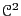
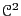

We will consider an Ewald implementation which is a modified version
of the ewald code written for Berend Smit's
Molecular Simulation course
webpage. This code
simply computes the Ewald energy for a cubic lattice, given an
appropriate number of particles, and a value for
(which is called  in the code), and a value for ,
the maximum integer index for enumerating -vectors. 5
in the code), and a value for ,
the maximum integer index for enumerating -vectors. 5
The units used in a system with electrostatics differ depending on
community. So far, we have assumed that the units of electrostatic
potential are charge  , divided by length ,
because we write potential as
, where
, divided by length ,
because we write potential as
, where  is
measured in units of
is
measured in units of  and distance in units of
. Energy is therefore written in units of
 over , and force in units of
over
and distance in units of
. Energy is therefore written in units of
 over , and force in units of
over  . If we want the final energy in
more familiar units, we can choose
. If we want the final energy in
more familiar units, we can choose  and ,
and use the standard prefactor
to convert from
``charge squared per length'' to ``energy''. For example, in SI
units,
(C/m)/J. In this
implementation, we use a length of
and
and measure energy such that
.
and ,
and use the standard prefactor
to convert from
``charge squared per length'' to ``energy''. For example, in SI
units,
(C/m)/J. In this
implementation, we use a length of
and
and measure energy such that
.
We will examine two configurations, both with  = 8 = 512
particles, with alternating + and - charges. One configuration has
the particle on a cubic lattice with lattice spacing , which
is the standard NaCl crystal structure. We will call this the
``crystal'' configuration. The other is like the crystal, only each
particle is displaced by a random amount from its lattice position
with a maximum displacement of 0.3. We will call this the ``liquid''
configuration. We compute the total electrostatic energy via the
Ewald sum technique for various values of and maximum
-vector index. As we increase the number of -vectors taken in
the sum, we would like to show that the total energy converges to a
certain value. We will measure this in terms of the Madelung
constant,
= 8 = 512
particles, with alternating + and - charges. One configuration has
the particle on a cubic lattice with lattice spacing , which
is the standard NaCl crystal structure. We will call this the
``crystal'' configuration. The other is like the crystal, only each
particle is displaced by a random amount from its lattice position
with a maximum displacement of 0.3. We will call this the ``liquid''
configuration. We compute the total electrostatic energy via the
Ewald sum technique for various values of and maximum
-vector index. As we increase the number of -vectors taken in
the sum, we would like to show that the total energy converges to a
certain value. We will measure this in terms of the Madelung
constant,  :
:
| (341) |
The following results were obtained for the crystal when :
alpha kmax u_real u_fourier u_self u_total M 1.20 2 -.206695 0.297020E-33 -0.67703 -0.88372 1.7674 1.20 3 -.206695 0.509667E-33 -0.67703 -0.88372 1.7674 1.20 4 -.206695 0.994016E-02 -0.67703 -0.87378 1.7476 1.20 5 -.206695 0.994016E-02 -0.67703 -0.87378 1.7476 1.20 6 -.206695 0.994016E-02 -0.67703 -0.87378 1.7476This shows that, for the perfectly periodic crystal, very few -vectors are needed to reach a converged energy.
For the liquid, the results are somewhat different, again for :
alpha kmax u_real u_fourier u_self u_total M 1.20 2 -.244210 0.210535E-01 -0.67703 -0.90018 1.8004 1.20 3 -.244210 0.349887E-01 -0.67703 -0.88625 1.7725 1.20 4 -.244210 0.482931E-01 -0.67703 -0.87294 1.7459 1.20 5 -.244210 0.510164E-01 -0.67703 -0.87022 1.7404 1.20 6 -.244210 0.519170E-01 -0.67703 -0.86932 1.7386 1.20 7 -.244210 0.521388E-01 -0.67703 -0.86910 1.7382 1.20 8 -.244210 0.521741E-01 -0.67703 -0.86906 1.7381 1.20 9 -.244210 0.521802E-01 -0.67703 -0.86906 1.7381 1.20 10 -.244210 0.521808E-01 -0.67703 -0.86906 1.7381
Considering the converged results for various values of  ,
we see that
,
we see that  is not too sensitive to
is not too sensitive to  , once :
, once :
|